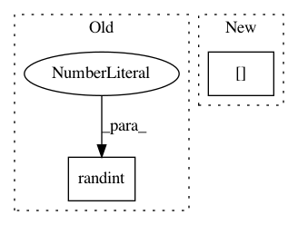

403b4fc7a25da5d957b24f1c269103ef6e290bd6,keras/preprocessing/image.py,ImageDataGenerator,flow,#ImageDataGenerator#Any#Any#Any#Any#Any#Any#Any#Any#,142
Before Change
random.seed(seed)
if shuffle:
seed = random.randint(1, 10e6)
np.random.seed(seed)
np.random.shuffle(X)
np.random.seed(seed)
np.random.shuffle(y)
After Change
np.random.seed(seed + total_b)
if shuffle:
index_array = np.random.permutation(X.shape[0])
else:
index_array = np.arange(X.shape[0])
In pattern: SUPERPATTERN
Frequency: 3
Non-data size: 2
Instances
Project Name: keras-team/keras
Commit Name: 403b4fc7a25da5d957b24f1c269103ef6e290bd6
Time: 2016-01-26
Author: udi@benreuven.com
File Name: keras/preprocessing/image.py
Class Name: ImageDataGenerator
Method Name: flow
Project Name: NifTK/NiftyNet
Commit Name: 3162e475ad96caa7e62a6351544fac23e148ab30
Time: 2017-09-16
Author: carole.sudre.12@ucl.ac.uk
File Name: niftynet/engine/sampler_selective.py
Class Name:
Method Name: rand_choice_coordinates
Project Name: keras-team/autokeras
Commit Name: b048efa4f956b80266942caea6ee8b4311e1d17a
Time: 2018-04-08
Author: jin@tamu.edu
File Name: autokeras/net_transformer.py
Class Name:
Method Name: to_wider_graph